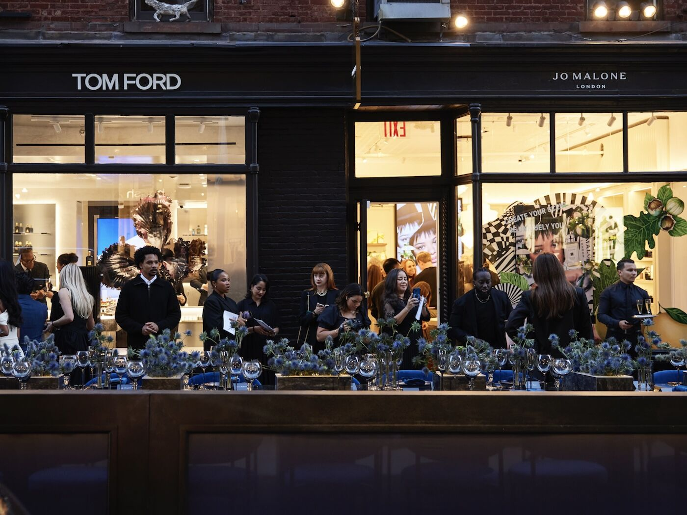
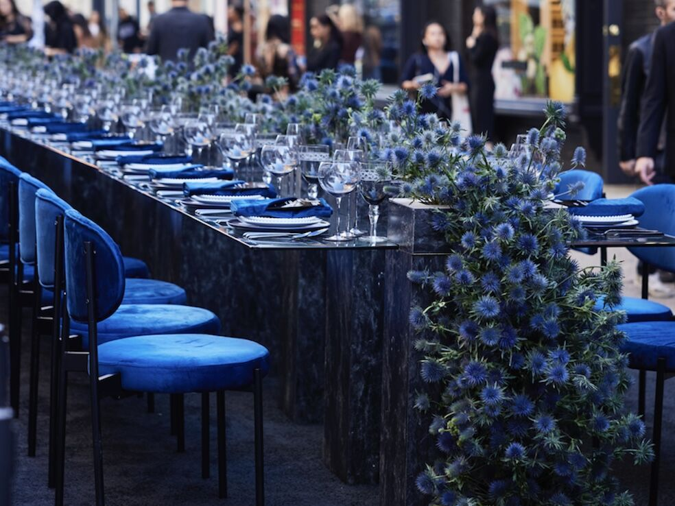
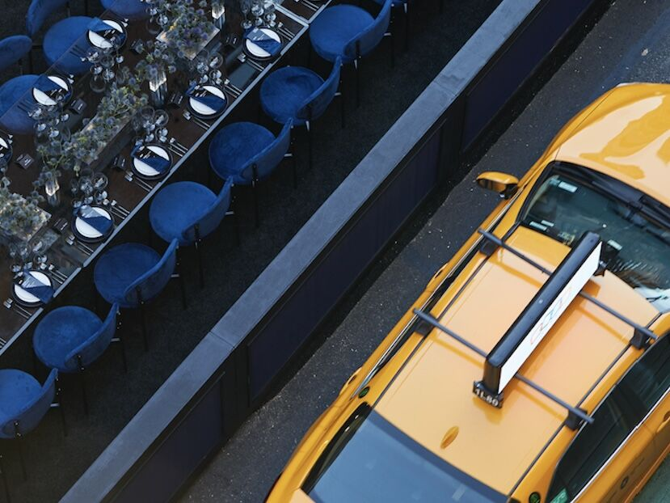
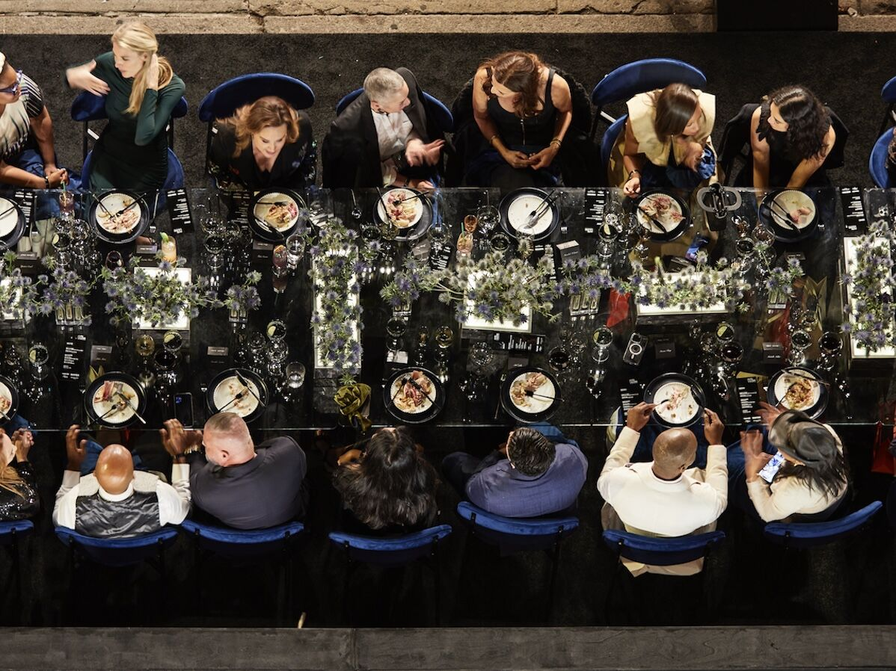
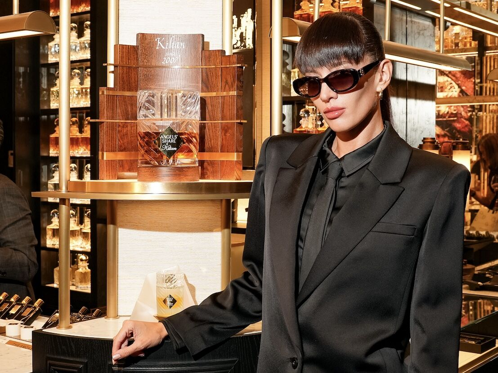
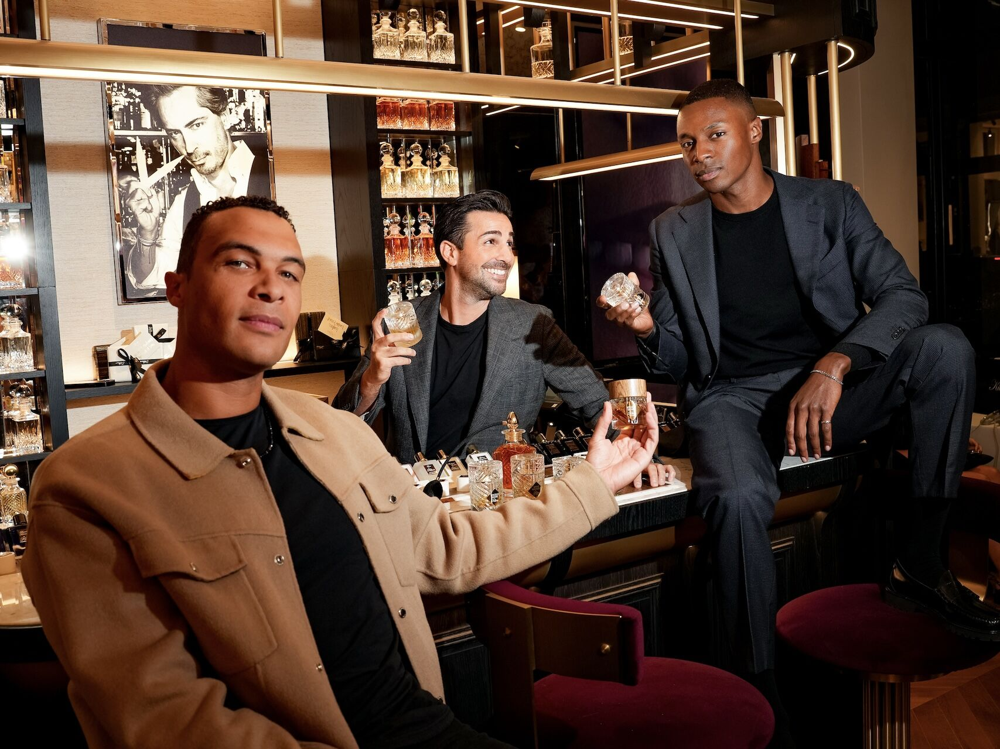
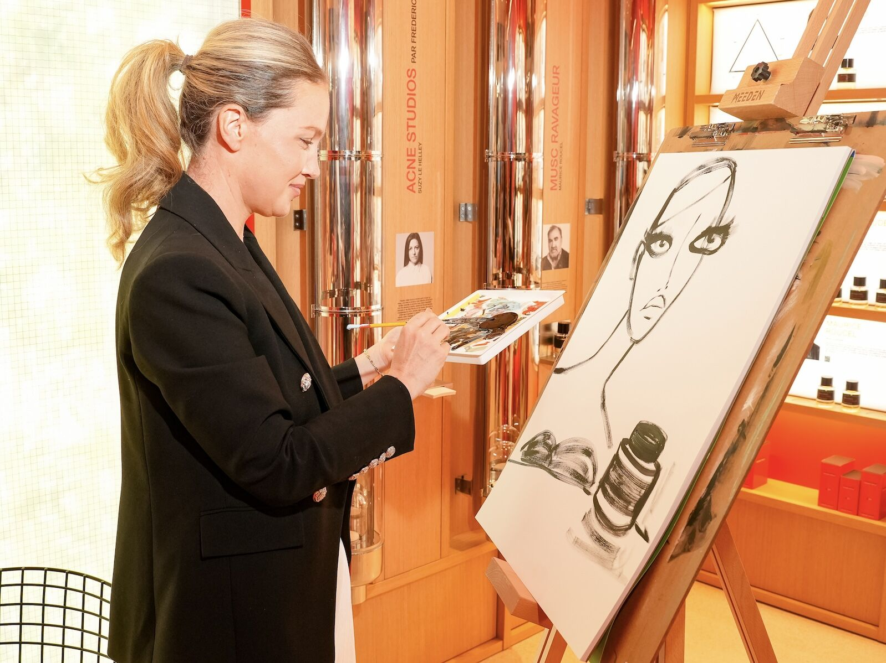
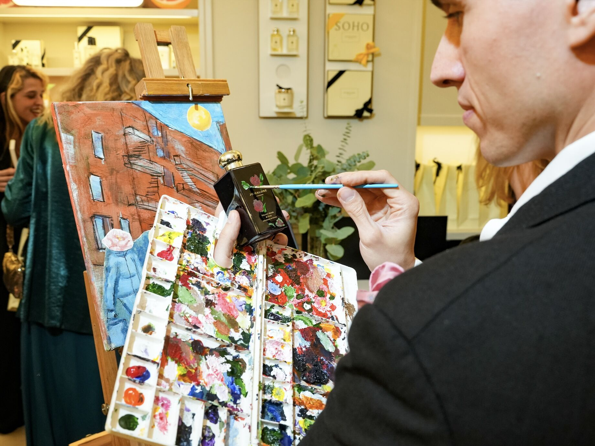
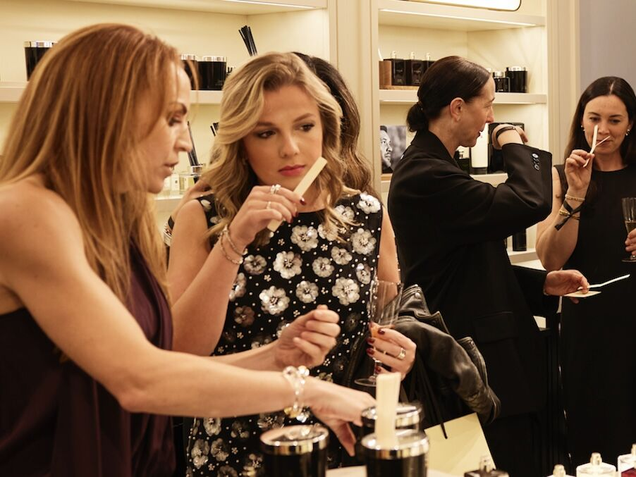

Photo coverage of the Prince Street fragrance opening party.
Read →Reporting on the new fragrance boutiques and the opening dinner.
Read →Full coverage of the Soho takeover and its strategic context.
Read →Project Overview
A city street, closed
and set for dinner
To mark the simultaneous opening of four Estée Lauder Companies fragrance boutiques on Prince Street in Soho, we closed the block and set a single continuous table down the center of it. Guests dined in the middle of the street, framed on both sides by the newly opened storefronts — Kilian Paris, Tom Ford Beauty, Jo Malone London, and Editions de Parfums Frédéric Malle — each activated with its own in-store experience.
As Planning Lead for the luxury portfolio, my responsibility was holding the through-line: partnering with global and North America communications to ensure every brand was represented to its own standard, while keeping the evening high-touch rather than corporate. Four distinct fragrance houses, each with non-negotiable identity guidelines, had to coexist in one shared visual field without any of them being diminished.
The resolution was a deliberately restrained shared palette — deep navy velvet, dark marble, blue thistle, silver and candlelight — that belonged to none of the four houses individually and therefore competed with none of them. The street became neutral ground. Each boutique retained its own world.
Dark wood, brass, and decanters — the fragrance bar as social anchor.
Editorial restraint and low light, holding the corner of the block.
Live bottle painting and botanical styling, the warmest room on the street.
A resident sketch artist working live among the perfumer columns.
The Street
A single table running the length of Prince Street, seating guests between the four storefronts. Navy velvet seating, dark marble surfaces, and blue thistle running the full length — a palette chosen to be shared rather than owned, so no house was subordinated to another.




Prince Street · Soho, New York City · October 3, 2025
The Boutiques
Each storefront was activated as its own destination within the evening — guests moved between the street and the four interiors throughout the night. The in-store programming was built to feel native to each house rather than applied to it: a fragrance bar at Kilian, live artists at Frédéric Malle and Jo Malone, and open scent discovery throughout.


Kilian Paris


Editions de Parfums Frédéric Malle
Jo Malone London

In-store fragrance discovery
The Evening in Motion
Film captured across the street and all four boutiques over the course of the night.
Full Reel
Watch the evening on Instagram.
Credits